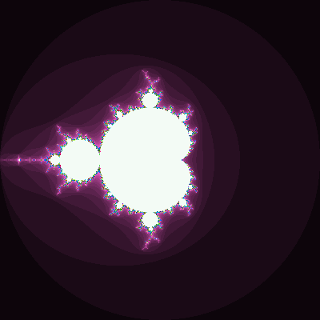

Lab 2: OpenMP programming
Due date and submission
- This lab can be submitted three times during 2015:
- 2015-02-12 at 17:00
- 2015-03-05 at 16:00 (15 working days after the first deadline)
- 2015-08-26 at 17:00 (during the re-exam period in August)
- Completing this lab is a requirement to pass the course.
- Download and unpack the student material zip file from the Cambro site.
- The files for this lab are found in
./student-material/labs/lab2/. - You should submit only the source code.
- Archive the
./code/directory using the./archive.shscript and submit the resultingcode.zipfile via the Cambro site. - Results and feedback will be posted on the Cambro site.
Rules
- The lab must be completed individually.
- The code must be written in the C programming language and be compatible with the C99 dialect and OpenMP.
- The code must run on the Abisko cluster.
Support
- Questions can be directed to Mikael Rännar and/or Lars Karlsson.
Prerequisites
Before you start, you should do the following:
- Attend the lecture on OpenMP programming.
- Complete the exercise on basic OpenMP.
Objectives
After completing this lab you should be able to
- Demonstrate your skill in basic OpenMP programming.
Instructions
The Mandelbrot set is a set of points in the complex plane for which a special sequence of complex numbers does not approach infinity. The set is one of the most famous of all fractals.
Part I: The escape time algorithm
A point c in the complex plane is a member of the Mandelbrot set if and only if the iteration z = z*z + c does not approach infinity when starting from z = 0.
This definition does not lend itself to computation since it would take forever to determine if a point is inside the set.
If the absolute value of z grows above 2, then one can show that the iteration will definitely approach infinity and hence the point will not be a member.
This leads to the so-called escape-time algorithm for approximating the set.
This algorithm iterates a large but finite number of times and checks after each iteration if the iterate has escaped the circle with radius 2 centered in origo.
The time it takes to escape this circle is mapped to a color and a colorful image can thereby be produced (see the Resources for an example).
The escape time algorithm is an example of a perfectly parallel computation: each pixel of the image can be generated independently of any other pixel. But the algorithm is also a good example of a computation with hard-to-predict load since the amount of computation required to color one pixel depends on the escape time of that pixel, which is not known in advance. Hence, it can be difficult to balance the load.
Part I of this lab consists of parallelizing the escape-time algorithm (a fully functional sequential implementation is given) using OpenMP loop parallelism. This is a rather straightforward application of the for directive with appropriate clauses such as scheduling etc.
Part II: The magic box trick
The second part requires a bit more work. If you look at a typical rendition of the Mandelbrot set or parts thereof, you may see large regions having the same color. The so-called magic box trick is a systematic way of finding rectangles of the image that are likely (but not guaranteed) to contain pixels of the same color. The idea is to first evaluate only the pixels on the border of a rectangle or box. If every single one of these pixels have the same escape time, then it is assumed that every pixel inside the box will also have that same escape time. This is often true but not always, so some errors may be introduced. Instead of evaluating each interior pixel, the magic box algorithm simply sets every pixel of the box to the determined constant, thus saving considerable computations.
The magic box trick can be systematically applied in a recursive manner by splitting the image into four equally sized boxes. If the border of a box contains pixels with different escape times, then the box is recursively split into four smaller boxes. This continues until either the box is filled or the box is too small to be beneficial to split further (recall the tradeoff between parallel overhead and task granularity!).
Part II of this lab consists of implementing a parallel formulation of magic box. Sequential code for this part is not given, but most of the code to implement the magic box trick can be reused from Part I so we hope this should not be a big problem. Contact a teacher immediately if you have trouble understanding the magic box trick. The parallelization should be performed using OpenMP task parallelism and exploit the natural recursive decomposition of the magic box algorithm.
The skeleton code
A fully functional sequential implementation of the escape-time algorithm is given in the ./code/ directory.
The code has been prepared for the addition of a magic box implementation later.
The skeleton code consists of the following files:
makefile: Input to themakeprogram to compile and link the programs.mandel-basic.c: Source file for the escape time algorithm.mandel-magic.c: Source file for the magic box algorithm.common.h: Header file for functionality common to both programs.common.c: Source file for common functionality.
To compile and link the programs use the command
make
which builds two programs called mandel-basic and mandel-magic.
The mandel-basic program is used as follows:
./mandel-basic HEIGHT WIDTH PIXELSIZE CENTERREAL CENTERIMAG MAXITERATIONS
which produces an image file named image.ppm in the PPM raster file format (see Resources for a link to the PPM file format specification).
The arguments are interpreted as follows:
HEIGHT: The height of the image in pixels.WIDTH: The width of the image in pixels.PIXELSIZE: The size of one side of a pixel in the complex plane (the pixels are square).CENTERREAL: The real component of the complex point at the center of the image.CENTERIMAG: The imaginary component of the complex point at the center of the image.MAXITERATIONS: The maximum iteration count.
To get an overview of the entire set, use the following inputs:
./mandel-basic 400 400 0.01 0 0 255
To view the produced image, try the display program:
display ./image.ppm
Note: If you are running on Abisko you need to either forward X connections through ssh or copy the file to your local machine (or access it via sshfs).
The resulting image looks like this:

Note: The PPM format is simple and uncompressed. To reduce the disk space required for the image you may want to convert the image to PNG using the command
convert image.ppm image.png
The mandel-magic program is used in much the same way with the addition of a seventh integer argument:
MAGICBOXMINSIZE: The minimum size (in pixels) of a magic box. A box with fewer pixels than this will not be divided further.
For example, to generate the same picture as before with the mandel-magic program and a minimum box size (area) of 1000 pixels, use the inputs
./mandel-magic 400 400 0.01 0 0 255 1000
Additional requirements
To pass, the following special requirements need to be satisfied:
- The
mandel-basicprogram should use OpenMP loop parallelism. - The
mandel-basicprogram should be able to use up to one thread per pixel. - The
mandel-magicprogram should use OpenMP tasks and recursive decomposition. - The
mandel-magicprogram should draw the border of a box filled with a constant with a contrasting color to show where the magic box trick has been applied to the image.
{kind=link}